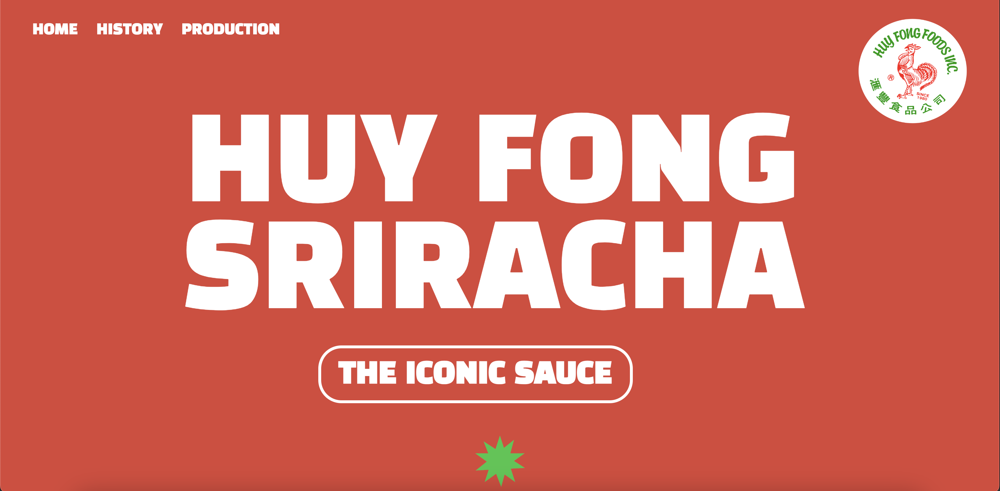

Recipe Page
This is a recipe page for the Jennifer Aniston salad. It organizes all of the ingredients, instruction, and information necessary to make the recipe.

Microsite - Designer/Developer
This is an informational movie site for 'Call Me By Your Name.' I worked with Rita Wang, who was my creative director to replicate the imagery, fonts, a color palette of the movie.
Microsite - Creative Director
This is a site for Huy Fong Sriracha that I creative directed. It was designed by Katie Zhu. I wanted it to have a bright feel that modernized the classic sauce.